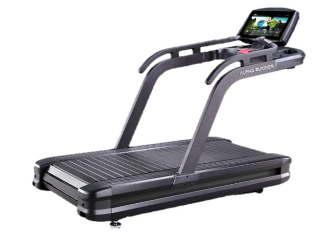

Featured Equipment
A multifunctional rehabilitation system designed to enhance training, engagement, and interactive rehabilitation experiences.

Combining data analytics, interactive training, and safety monitoring
Switch between active challenge and passive-assisted training based on user ability.
Supports training intensity adjustment through non-contact heart rate sensing.
Provides safety reminders and status alerts during training sessions.
AI-generated coaching and game-based interaction improve user engagement.